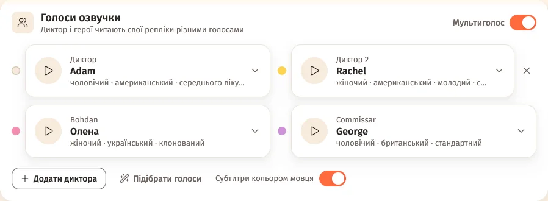
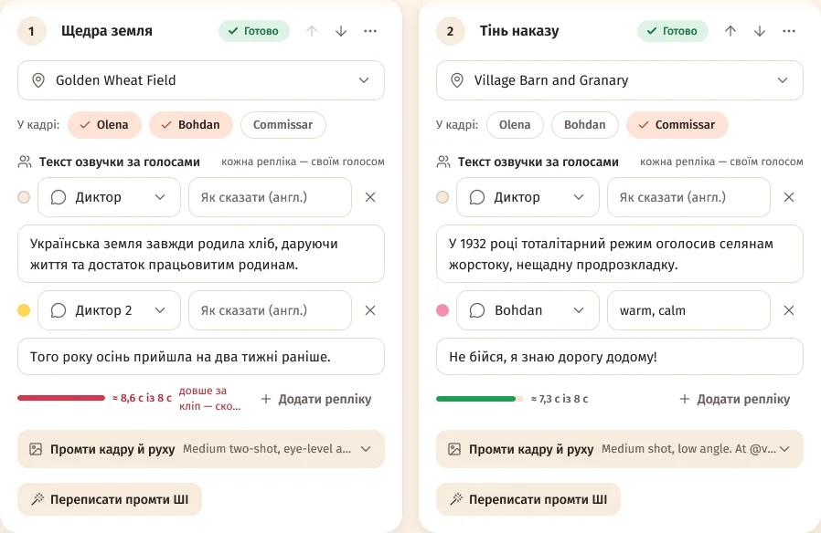

Як увімкнути
- Відкрий проєкт → крок «Сценарій» (або «План») → картка «Голоси озвучки».
- Увімкни «Мультиголос».
- Перевір голоси або натисни «Підібрати голоси».
- Далі як завжди: план розпише текст між диктором і героями.

Мультиголос вмикається в самому проєкті, коли фільм озвучує диктор. Зі «Своєю озвучкою» картки немає; у вікні нового проєкту й у профілях цього перемикача теж немає.
Голоси
- «Диктор» — головний голос оповіді.
- «Додати диктора» — «Диктор 2» і «Диктор 3», до двох додаткових.
- Кожен герой, що говорить, — своє поле з голосом; за замовчуванням «Як у диктора».
«Підібрати голоси» — студія сама обере голоси з твого сервісу озвучки за статтю, віком і мовою фільму, по змозі без повторів; «Диктор 2» отримає голос іншої статі. Змінити можна будь-коли.
Репліки за голосами
У плані кожна сцена отримує «Текст озвучки за голосами» — «кожна репліка — своїм голосом». Пряма мова в лапках дістається героєві, що її каже, решта — диктору; текст готового сценарію лишається слово в слово.
Репліку можна переписати, віддати іншому мовцю, підказати інтонацію в полі «Як сказати (англ.)» або «Додати репліку».

Субтитри кольором мовця
Перемикач «Субтитри кольором мовця» у тій самій картці фарбує репліки в субтитрах кольором мовця — тими кольорами, що позначені біля голосів.
Як звучить
З ElevenLabs і моделлю Eleven v3 сцена озвучується одним запитом-діалогом. З іншими сервісами репліки озвучуються окремо й склеюються з паузами.
Питання
Можна лишити один голос?
Так — просто не вмикай «Мультиголос». Перемикач — у кожному проєкті свій.
Не сподобався голос героя.
Вибери інший у картці «Голоси озвучки» й переозвуч сцени з ним.
Скільки дикторів можна додати?
До трьох: «Диктор», «Диктор 2» і «Диктор 3». Героїв — скільки є в плані.